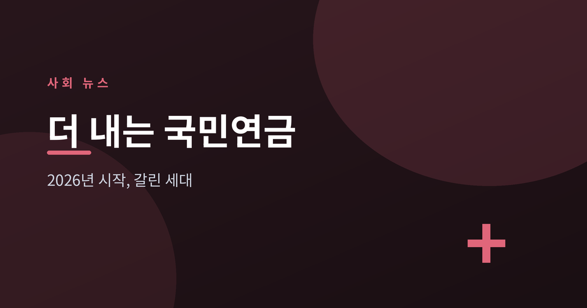
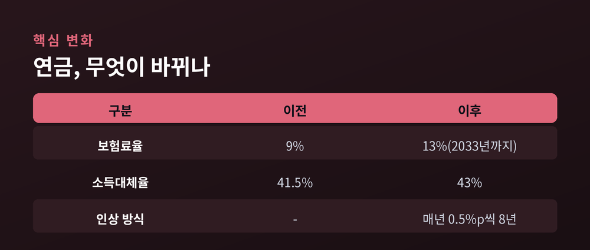
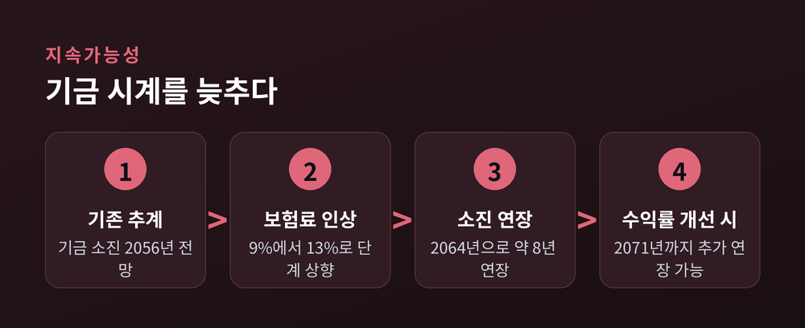
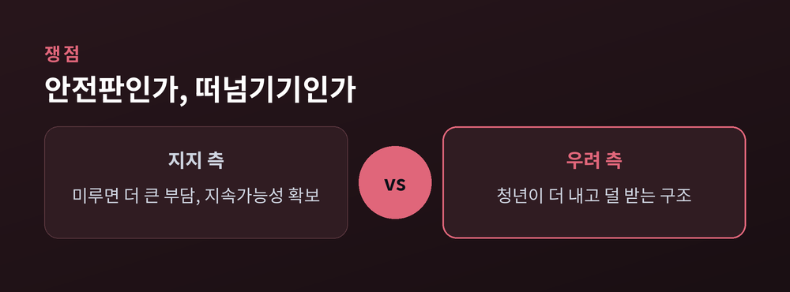

세대가 나뉜 이유

올해부터 국민연금 보험료가 오르기 시작했습니다. 약 18년 만의 개혁입니다. 무엇이 어떻게 바뀌었고, 왜 세대마다 반응이 갈리는지 차분히 짚어보겠습니다. 어느 한쪽 편을 들기보다 쟁점을 있는 그대로 정리하려 합니다.
2026년 1월부터 개정 국민연금법이 시행됐습니다. 핵심은 두 가지 숫자입니다. 소득의 9%였던 보험료율이 13%까지 오릅니다. 2026년부터 2033년까지 8년에 걸쳐 매년 0.5%포인트씩 단계적으로 인상됩니다.
받는 쪽도 조정됩니다. 소득대체율, 즉 은퇴 전 소득 대비 연금 수령액의 비율은 41.5%에서 43%로 올랐습니다. 한마디로 '더 내고 조금 더 받는' 구조입니다.
당장 부담이 폭증하는 것은 아닙니다. 월소득이 약 309만원인 직장인이라면 첫해 인상분은 월 7,700원가량입니다. 보험료의 절반은 회사가 부담합니다. 다만 인상은 매년 이어집니다.

이번 개혁의 명분은 '지속가능성'입니다. 국민연금은 국민 대부분이 가입한 사회보험입니다. 그런데 고령화가 빨라지며 기금이 언젠가 바닥날 것이라는 우려가 오래 이어졌습니다.
정부 추계에 따르면 이번 조정으로 기금 소진 시점이 2056년에서 2064년으로 약 8년 늦춰집니다. 기금 투자수익률을 더 끌어올리면 2071년까지 미룰 수 있다는 전망도 나옵니다.
배경에는 뼈아픈 현실이 있습니다. 한국의 노인 빈곤율은 경제협력개발기구(OECD) 회원국 가운데 가장 높은 수준입니다. 노후 소득을 두텁게 하면서 동시에 재정도 지켜야 하는, 두 마리 토끼를 쫓는 개혁인 셈입니다.

개혁을 지지하는 쪽은 "미루면 더 큰 부담이 온다"고 봅니다. 지금 손대지 않으면 미래에 훨씬 급격한 인상이 불가피하다는 것입니다. 정부는 세대 간 형평을 위해 연령대가 높을수록 보험료를 더 빨리 올리고, 청년층은 완만하게 올리는 방향도 설계에 담았습니다.
반면 20~30대의 반발은 뚜렷합니다. 보험료율은 9%에서 13%로 크게 오르는데 소득대체율 상승 폭은 상대적으로 작다는 점, 그리고 늘어난 혜택이 수급을 앞둔 기성세대에게 먼저 돌아간다는 점 때문입니다. 청년은 수십 년을 더 내야 하는 구조여서, 여론조사에서도 젊은 층 과반이 개혁안에 반대로 나타났습니다.
전문가들 사이에서는 "숫자만 바꾼 반쪽 개혁"이라는 비판도 있습니다. 국고 지원 확대, 자동조정장치, 신·구 연금 분리 같은 구조적 손질이 빠졌다는 지적입니다.
같은 제도를 두고 '안전판'과 '떠넘기기'라는 두 이름이 오가고 있습니다.

정리하면 이렇습니다. 이번 개혁은 연금 시계를 잠시 늦추는 데 성공했지만, 세대 간 신뢰라는 더 어려운 숙제를 남겼습니다. 보험료율과 소득대체율은 정했어도, 국고 투입과 자동조정장치 같은 구조 개혁은 여전히 미래의 과제로 남아 있습니다.
"연금은 결국, 다음 세대에게 건네는 약속입니다."
숫자를 조정하는 일은 끝났습니다. 이제 남은 물음은, 그 약속을 세대가 함께 믿을 수 있느냐입니다.
참고 출처: 대한민국 정책브리핑, 보건복지부, 토스뱅크, 투데이신문, 보험저널, 뉴스타파, KDI